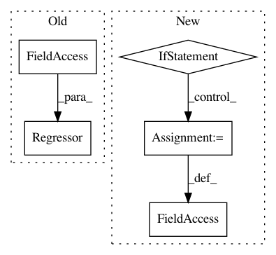

bdd275227ed4e37833414e33176bbe0585f02a8b,mushroom/algorithms/value/batch_td.py,BatchTD,__init__,#BatchTD#Any#Any#Any#Any#Any#Any#Any#Any#,16
Before Change
approximator_params
self._quiet = quiet
self.approximator = Regressor(approximator,
**self._approximator_params)
policy.set_q(self.approximator)
super(BatchTD, self).__init__(policy, mdp_info, features)
After Change
// "Boosted Fitted Q-Iteration". Tosatto S. et al.. 2017.
self._boosted = boosted
if self._boosted:
self._prediction = 0.
self._next_q = 0.
self._idx = 0
def fit(self, dataset):
Fit loop.
In pattern: SUPERPATTERN
Frequency: 3
Non-data size: 5
Instances
Project Name: AIRLab-POLIMI/mushroom
Commit Name: bdd275227ed4e37833414e33176bbe0585f02a8b
Time: 2018-06-11
Author: carloderamo@gmail.com
File Name: mushroom/algorithms/value/batch_td.py
Class Name: BatchTD
Method Name: __init__
Project Name: AIRLab-POLIMI/mushroom
Commit Name: a036d8784f0e7e0d789eb5507dc2838a5eef6157
Time: 2017-09-29
Author: carloderamo@gmail.com
File Name: examples/deep_fqi_atari/game_feature.py
Class Name:
Method Name:
Project Name: AIRLab-POLIMI/mushroom
Commit Name: e1486f92c11242af5207e24a7d5ae1b3fae5dbe2
Time: 2017-09-08
Author: carlo.deramo@gmail.com
File Name: mushroom/approximators/action_regressor.py
Class Name: ActionRegressor
Method Name: __init__